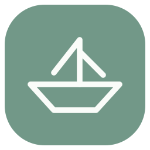

我的文档
我的文档
继续上次的阅读，或把新的 PDF 放进来。
把 PDF 放在这里
↗支持多文件导入，也可以点击选择 · Ctrl + O
全部文档
书架从第一份文档开始
导入的文档、阅读进度与批注会保存在本机浏览器中。
清除浏览器数据会删除这些副本，请及时导出重要文档。
纸舟 0.5 · 本地预览版

纸舟Paperboat继续上次的阅读，或把新的 PDF 放进来。
支持多文件导入，也可以点击选择 · Ctrl + O
导入的文档、阅读进度与批注会保存在本机浏览器中。
清除浏览器数据会删除这些副本，请及时导出重要文档。
勾选页面后操作。应用整理会另存为新文档，原文件保留。